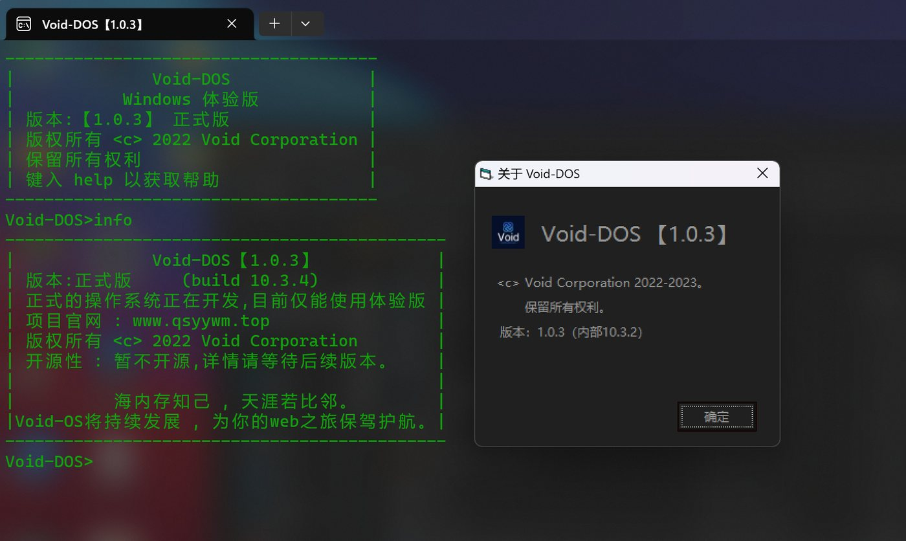

01
OVERVIEW
关于这个项目
Void-DOS 是 Void 系列最早的一次命令行实验。
这是用于替代 CMD 的应用程序。它尝试把熟悉的命令行体验重新包装成 Void 系列的样子，也是后来很多小工具与实验的起点。
项目目前已经停止支持，只保留 1.0.3 版本作为归档。如果你只是想看看它长什么样，截图和说明会一直留在这里。

02
DETAILS
功能与要求
功能
- 替代 CMD 的基础命令行操作
- Void 系列最早的实验版本
- 项目已停止更新
运行要求
- Windows 环境
- 能运行 CMD 的硬件环境
- 仅保留 1.0.3 归档版本